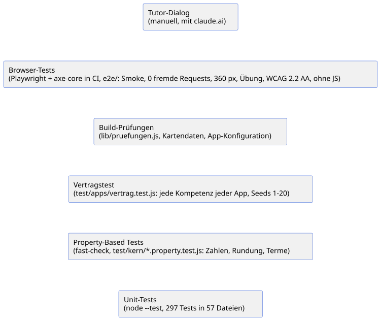

Querschnittliche Konzepte: Wenig Laufzeit-Technik, viele Regeln, die der Build erzwingt
Die Apps haben kaum Technik, die man zur Laufzeit absichern, beobachten oder skalieren müsste. Umso mehr hängt an Regeln, die jede Datei einhält, und seit dem Monorepo prüft der Build sie. Die ersten fünf Abschnitte sind in jedem System Pflicht; ab 8.6 folgen die Anliegen, die diese Apps wirklich haben, jedes mit dem ADR, das es entschieden hat.
8.1 Bedrohungsmodell: Die größten Gefahren kommen über Konten, Pakete und Texte, nicht über einen Server
Das Modell folgt STRIDE. Schützenswert sind die Privatsphäre des Kindes, die Richtigkeit dessen, was Tutor und App ihm sagen, und die Integrität des einen Repositorys, aus dem alle Apps entstehen. Einen Server oder eine Datenbank gibt es nicht (ADR-001). Neu seit dem Monorepo: Zur Build-Zeit läuft fremder Code (Eleventy, docToolchain) und eigener Code der Apps in Node.
| ID | STRIDE | Bedrohung | Betroffen |
|---|---|---|---|
S, T |
Jemand übernimmt das Konto eines Organisationsmitglieds oder ein Token und ändert Kern, Apps oder |
Repository, alle Apps |
|
T |
Prompt Injection über |
Apps (Tutor-Texte) |
|
T |
Manipulierter Deep Link: präparierte Parameter sollen Script einschleusen (XSS) oder eine irreführende Aufgabe zeigen. |
Kern (Seitenstart, Aufgabenlink, Trainer) |
|
T, E |
Eine kompromittierte Fassung von |
Kern |
|
I |
YouTube erfährt IP-Adresse und Browserdaten des Kindes schon beim Laden der Seite. |
Kern (Video), Layout |
|
I |
Auf einem geteilten Schulgerät sieht das nächste Kind Selbsteinschätzung und letztes Testergebnis. |
Browser-Speicher |
|
I |
Ein Beitrag oder ein Theme bindet eine fremde Ressource ein (CDN, Webfont, Analytics); jeder Aufruf meldet sich bei Dritten. |
Layout, Kern, Apps, Doku |
|
T, E |
Eine Eingabe im Zahlenfeld wird als Code ausgeführt ( |
Kern (Zahlen) |
|
D |
Eine Eingabe wie |
Kern (Zahlen) |
|
I |
Das Kind gibt im Tutor-Chat persönliche Daten preis; claude.ai verarbeitet sie nach eigenen Regeln. |
claude.ai (außerhalb) |
|
R |
Nicht nachvollziehbar, wer |
Repository |
|
T, E |
Lieferkette: Eine kompromittierte Version von Eleventy, einer transitiven npm-Abhängigkeit oder von docToolchain schleust beim Build Code in die Ausgabe. |
Build, Architektur-Doku |
|
T, E |
Ein Beitrag (PR) führt beim Build Code aus: App-Konfigurationen, Generatoren und Zeichenfunktionen laufen in Node. |
Build, Tests und CI |
|
I |
Das Kind schickt Fotos seines Rechenwegs in den Chat (ADR-022). Der Chat-Anbieter erhält Handschrift und alles, was sonst auf dem Bild ist: Name, Schulstempel, Umgebung, je nach Gerät Metadaten wie den Aufnahmeort. |
Chat-Anbieter (außerhalb) |
|
S, T, E |
|
Apps (Tutor-Texte), Mathe-Karte ( |
|
T |
Ein präparierter Deep Link setzt URL-Parameter auf Namen geerbter Objekt-Eigenschaften ( |
Kern (URL-Parameter), Apps (Generatoren) |
|
S, T |
Ein Link in |
Build (Allowlist), Apps (Tutor-Texte) |
|
T, E |
Ein Workflow bindet eine GitHub Action über ein verschiebbares Tag ein. Wer das Tag umhängt, führt Code im Build oder im Deploy mit |
CI, Deployment |
8.2 Sicherheit: Jede Maßnahme schließt eine benannte Bedrohung
| ID | Maßnahme | Schließt | Quelle / ADR |
|---|---|---|---|
M-01 |
Kein Backend, keine Konten, keine Cookies. |
T-006 (teilweise), T-010 (teilweise) |
ADR-001 |
M-02 |
Der Build prüft die Ausgabe: keine externen |
T-007 |
|
M-03 |
Zwei-Klick-Video: Platzhalter mit lokal gezeichnetem, neutralem Play-Symbol, kein Vorschaubild; iframe erst nach Klick, nur |
T-005 |
|
M-04 |
URL-Parameter werden validiert: Nummer nur Ziffern, Zahlen nur > 0 und < 1e9, Texte nur Kürzel, Modus nur |
T-003 |
|
M-05 |
Eigene Parser ohne |
T-008, T-009 |
|
M-06 |
TalkItOver liegt eingebettet im Repo ( |
T-004 (teilweise) |
|
M-07 |
Im |
T-006 (teilweise) |
|
M-08 |
Änderungen nur über Feature-Branch und PR; Git-Historie und Reviews machen jede Änderung nachvollziehbar. |
T-011, T-002 (teilweise), T-001 (teilweise), T-013 (teilweise) |
|
M-09 |
|
T-002 (teilweise), T-010 (teilweise) |
|
M-10 |
Die Startseite jeder App sagt vor dem Klick, dass „Mit Claude lernen“ claude.ai öffnet. |
T-010 (teilweise) |
|
M-11 |
Workflows mit minimalen Rechten: |
T-001 (teilweise), T-013 (teilweise) |
|
M-12 |
Eleventy exakt gepinnt ( |
T-012 (teilweise) |
|
M-13 |
docToolchain am festen Commit |
T-012 (teilweise) |
|
M-14 |
Die Doku lädt nichts von fremden Hosts: Theme-CSS ohne CDN-Importe, Schriften und Symbole lokal. |
T-007 |
|
M-15 |
Branch-Schutz für |
T-001 (teilweise), T-011, T-013 (teilweise) |
|
M-17 |
Die zweite Erklärung bei serlo.org ist ein reiner Link ( |
T-007 |
|
M-18 |
Die App überträgt keine Fotos und hat kein Upload-Feld; nur das Kind schickt ein Foto, in seinem eigenen Chat-Werkzeug. |
T-014 (teilweise) |
|
M-19 |
GitHub-Sicherheitsschalter seit 24.09.2026: Secret Scanning mit Push Protection (ein Push mit erkanntem Token scheitert), Dependabot-Alerts und -Security-Updates, CodeQL Default Setup für JavaScript und Actions. |
T-001 (teilweise), T-012 (teilweise), T-015 (teilweise) |
#19; ADR-023 |
M-20 |
Im Pflicht-Check |
T-003, T-008, T-012 (teilweise) |
|
M-21 |
Zwei-Faktor-Pflicht für die Organisation |
T-001, T-015 (teilweise) |
|
M-22 |
Link-Allowlist für Tutor-Dateien: Der Build lässt in |
T-015 (teilweise), T-002 (teilweise) |
|
M-23 |
KI-Review vor jedem Merge: Ein Reviewer in frischem Kontext prüft den PR nach |
T-002 (teilweise), T-003 (teilweise), T-015 (teilweise) |
|
M-24 |
Lizenzprüfung ohne neue Abhängigkeit: |
T-012 (teilweise), T-004 (teilweise) |
|
M-25 |
URL-Parameter nur über eigene Schlüssel: |
T-016 |
|
M-26 |
Gehärtete Tutor-Allowlist: Der Build erkennt auch URLs mit einem Schrägstrich oder Backslash nach dem Schema, |
T-017, T-015 (teilweise) |
|
M-27 |
Jede GitHub Action ist per vollständigem Commit-SHA gepinnt, die Version steht als Kommentar daneben. Dependabot hebt die Pins monatlich per PR, der alle Pflicht-Checks durchläuft. |
T-018, T-012 (teilweise) |
|
M-28 |
Referrer-Policy |
T-005 (teilweise) |
|
M-16 |
Rückmeldung nur über einen Link auf GitHub Issues. Die Seite lädt nichts von GitHub; erst der Klick des Kindes oder der Eltern öffnet GitHub. GitHub verlangt ein Konto und ein Mindestalter von 13 Jahren; jüngere Kinder brauchen die Eltern. Entschieden am 23.09.2026, noch nicht umgesetzt. |
T-007 (hält den Link frei von Einbettungen) |
Offene Restrisiken: Admins können den Branch-Schutz umgehen, und eine Freigabe erzwingt er nicht (R-026); T-012 bleibt ein Lieferketten-Risiko (R-015), T-002 hängt am Review; die Allowlist (M-22) hält fremde Links fern, aber nicht fremden Text in einem gemergten PR (R-024). T-014 ist bewusst nur teilweise geschlossen: Was auf dem Foto steht, liegt beim Kind (R-022). T-016 bis T-018 stammen aus dem Security-Review vom 25.09.2026, M-25 bis M-28 beheben dessen Befunde S-001 bis S-004 (Anhang Bewertungen); eine Content Security Policy fehlt noch (R-033).
8.3 Test: Viele schnelle Unit-Tests, ein Vertragstest für alle Apps, der Build als Prüfstand, Browser-Tests obenauf
Reine, DOM-freie Module machen Unit-Tests möglich (ADR-013, ADR-016); die Regeln als Build-Fehler entscheidet ADR-008.
| Ebene | Was sie prüft | Rückverfolgung |
|---|---|---|
Unit-Tests ( |
Jedes Kern-Modul, jede Build-Funktion und jeder Generator als reine Funktion; test-first. |
Mindestens 90 % der Testdateien nennen im Kopf den Use Case ( |
Property-Based Tests ( |
Eigenschaften der Kern-Mathematik über viele erzeugte Eingaben statt Einzelbeispiele: Round-Trip formatierter Zahlen, monotone Rundung, Stellenregel, „=“ nur bei exakten Werten, Gleichwertigkeit und Form von Binomen, abgelehnte Fehlterme. fast-check mit festem Seed 22 und 300 Läufen je Eigenschaft (zusammen unter 1 s); anderer Seed lokal mit |
Jeder Test nennt QZ-3 und R-004 oder R-012 im Namen, dazu BR-2, BR-5, BR-T7, BR-T8 (Issue #22) |
Vertragstest |
Für jede Kompetenz jeder App aus |
UC-1, UC-4 ( |
Typprüfung ( |
|
ADR-023, Issue #25 |
Build-Prüfungen |
Regeln, die kein Unit-Test sieht: externe Ressourcen in der Ausgabe, Dateilänge, vollständige Kompetenz (Seite, Generator, Test), |
UC-8, UC-9; QZ-1, QZ-2, QZ-4 |
Browser-Tests ( |
Playwright mit Chromium gegen das gebaute |
UC-1 bis UC-7; QS-12, QS-13, QS-27; ADR-021 (#26, TD-5 abgebaut, ADR-026) |
Tutor-Dialog |
Ob Claude mit |
UC-7; nicht automatisiert |
Unit-, Vertrags- und Property-Based Tests laufen auf Node-Bordmitteln (node:test, node:assert) mit
fast-check; die Browser-Tests nutzen @playwright/test und @axe-core/playwright
(ADR-026). Alle sind exakt gepinnte devDependencies, ausgeliefert
wird keine: Eleventy baut, die anderen prüfen. Lokal: npm run build && npm run test:browser (einmalig
npx --package=@playwright/test playwright install chromium).
8.4 Beobachtbarkeit: Die Apps messen absichtlich nichts, der Build meldet alles
Es gibt keine Logs, Metriken, Traces oder Audit-Trails zur Laufzeit. Das folgt aus QZ-1 und ADR-001: Jede Telemetrie wäre ein Request, der etwas über das Kind verrät. An ihre Stelle treten:
-
Build-Ausgabe:
[lern-apps] 3 App(s) geprüft, ?v=<Hash>oder die Liste aller Regelverstöße (eleventy.config.js); in CI im Actions-Log vonpruefen.ymlundpages.yml. -
Audit-Trail: die Git-Historie für Code,
tutor.md,llms.txt, Kartendaten und ADRs. -
Beim Kind: Ergebniszeile und Aufgabennummer sind die einzige „Telemetrie“; das Kind entscheidet, ob es sie teilt. Auch „Zurück zu Claude“ (ADR-021) sendet nichts: Die Zeile landet nur in der Zwischenablage des Geräts und bleibt lokal, bis das Kind sie selbst bei Claude einfügt. Kein Request, kein
postMessage, kein Speichern. Den Rechenweg sieht die App nie: Das Kind schickt ein Foto des Blatts selbst in den Chat (ADR-022); die Fotos liegen dann beim Chat-Anbieter. -
Beim Tutor: Was nicht funktioniert, zeigt sich im Gespräch.
-
Rückmeldung an die Autor:in: Jede Seite bekommt einen Link auf GitHub Issues (entschieden am 23.09.2026). Nur wer klickt und ein GitHub-Konto hat, meldet etwas; die App selbst sendet nichts (8.2 M-16).
8.5 Fehlerbehandlung: Im Build abbrechen, im Browser zurückfallen
Retry und Circuit Breaker braucht niemand, denn die Apps rufen keinen Dienst auf (ADR-001). Fehler werden an zwei Orten behandelt.
-
Build: lieber rot als falsch. Jede Regelverletzung, jede fehlerhafte App-Konfiguration, jedes unbekannte Fach und jeder unbekannte Karten-Knoten wirft;
npm run buildendet mit Fehler,pages.ymldeployt nichts, die letzte Fassung bleibt online (ADR-008, ADR-017, ADR-018). -
Speicher darf fehlen. Jeder
localStorage-Zugriff steht intry/catch; Laden liefert einen leeren Wert, Speichernfalse, die Seite sagt es dem Kind (ADR-007). -
Ungültige Eingaben aus der URL werden zu Zufall (
leseSeed,leseVorgaben,leseModus). -
Unlesbares ist kein Versuch (
wirdGezaehlt,src/kern/js/pruefung.js:73). -
Kopieren hat einen Rückfall: ohne Zwischenablage markiert die App den Text.
-
Schließen wird nachgeprüft: „Zurück zu Claude“ prüft 300 ms nach
window.close(), ob der Tab zu ist, und sagt sonst peraria-live, was zu tun ist; ohne Zwischenablage schließt es gar nicht (ADR-021, Szenario 7). -
Ohne JavaScript bleibt Inhalt: Text und Bild stehen im HTML;
<noscript>sagt, was fehlt (ADR-016). -
Alte und neue Module mischen sich nicht:
?v=<Hash>an jeder Referenz (8.10, ADR-014).
Die Szenarien dazu stehen in Szenario 6.
8.6 Barrierefreiheit: Lesbar ohne JavaScript, bedienbar per Tastatur, gut ab 360 px
Grundlage sind ADR-001 (statische Seiten), ADR-016 (Bild ohne JS) und ADR-011 (Kontrast der Fachfarben).
-
lang="de", Skip-Link,navmitaria-label,aria-current="page". -
Mobile-first: Grundlayout für 360 px, ab
40rembreiter (src/kern/css/stil.css:2,:223); Systemschriften. -
„Zurück zu Claude“ ist ein echter
<button>mit mindestens 44 px Höhe; Hinweis und Rückfall-Feld (mitaria-label) sind per Tastatur erreichbar, der Hinweis steht inaria-live="polite"(ADR-021). -
Jedes Feld hat ein
<label>; Rückmeldung und Vorschau inaria-live="polite"; der Lösungsknopf trägtaria-expanded. -
Bilder sind SVG mit
role="img"undaria-label; das statische SVG steht schon im HTML. Enthält ein Bild anklickbare Elemente (role="button"), trägt das SVGrole="group", denn einimgdarf keine Bedienelemente enthalten.
8.7 Zahlen eingeben: Eine Rundungsregel für alle Felder
Entschieden in ADR-006, umgesetzt in
src/kern/js/zahlantwort.js, geprüft in test/kern/zahlantwort.test.js. Der Domain Expert hat die
Rundungsregel am 23.09.2026 fachlich bestätigt: Geld 2, Prozent 1, sonst 2 Nachkommastellen.
-
BR-1 Jedes Zahlenfeld hat eine Art:
geld2,prozent1,zahl2 Stellen (zahlantwort.js:17);stellenüberschreibt. -
BR-2 Die Toleranz folgt den getippten Stellen: richtig ist der exakte Wert oder der exakte Wert kaufmännisch auf die getippten Stellen gerundet, mindestens die geforderten.
-
BR-3 Zu grob, aber richtig gerundet ist ein Hinweis, kein Fehler.
-
BR-4 Brüche und Terme gelten überall als exakt; Felder mit
nurZahl: trueverlangen das ausgerechnete Ergebnis. -
BR-5 Tippt das Kind einen Term, zeigt das Feld nach 150 ms den Wert („= 30 €“, „≈ 3,33“).
Irrationale Werte vergleicht der Prüfer mit dem relativen Spielraum 1e-9 (zahlantwort.js:22);
Dezimalzahlen mit mehr als 12 Nachkommastellen gelten nicht als gerundet (:23). Generatoren setzen
keine eigenen Toleranzen.
8.7.1 Terme mit Variablen: Gleichwertig heißt gleich an festen Prüfstellen
Entschieden in ADR-009, umgesetzt in
src/kern/js/variablenterm.js und src/kern/js/termantwort.js, Business Rules BR-T1 bis BR-T9
(Use Case UC-T). Gleichwertig heißt: gleich an 8 festen Belegungen ohne 0 und ±1, mindestens 5 gültig,
relative Toleranz 1e-9 (termantwort.js:26). Falsche Form (nicht-ausmultipliziert,
nicht-zusammengefasst, nicht-faktorisiert) ist ein Hinweis und zählt nicht. Die Formregeln
„ausmultipliziert“ und „faktorisiert“ hat der Domain Expert am 23.09.2026 fachlich bestätigt.
8.8 Konfiguration: Die App reicht sich dem Kern hinein
Entschieden in ADR-013. src/<app>/js/app.config.js ist
reine Daten ohne DOM; Build, Seiten und Tests lesen sie, der Kern nie.
| Eintrag | Bedeutung |
|---|---|
|
Name der App in der Mathe-Karte (Einträge, |
|
Präfix aller |
|
Ordner unter |
|
Texte für Übersicht, Kopf, Manifest, Karte. |
|
Wählt die Fachfarbe (8.11); unbekanntes Fach bricht den Build. |
|
Eintrags-Felder für die Mathe-Karte (8.14); optional. |
|
Reihenfolge = Checklisten-Nummer; je Eintrag |
Adresse, Quellcode-Link, Farbe und Version leitet der Build ab; sie stehen nicht in der Konfiguration (ADR-015).
8.9 Aufgabennummer: Dieselbe Nummer ergibt dieselbe Aufgabe
Entschieden in ADR-004. Jeder Generator bekommt ein
Zufallsobjekt aus erzeugeZufall(seed) (mulberry32) und darf keinen anderen Zufall benutzen. Ohne
Nummer wählt die App eine aus 1–9999. seed gewinnt vor nr. Im Text für Kinder heißt es
„Aufgabe Nr. 42“. Das statische Bild einer Seite entsteht aus bild.seed im Front Matter (Standard 1,
lib/bild.js:20).
8.10 Auslieferung und Cache: Jeder Inhalt hat eigene URLs
Entschieden in ADR-014 (ersetzt ADR-010). Nach dem
Schreiben von _site bildet der Build einen Hash (8 Hex-Zeichen, SHA-256) über Pfad und Inhalt aller
ausgelieferten JS-, CSS- und JSON-Dateien und hängt ?v=<Hash> an jeden relativen Import (statisch,
export … from, dynamisch), jedes lokale <script src>, <link href> auf JS/CSS und jeden Import in
Inline-Modulen (lib/versionierung.js:9-28). In den Quellen steht nie ein ?v=. Überall steht derselbe
Wert; sonst lädt der Browser ein Modul unter zwei URLs doppelt. Die Doku unter /docs/ hat ihre eigene
Versionierung durch docToolchain und wird vom Hash nicht erfasst.
8.11 Gestaltung: Die Farbe verrät das Fach
Entschieden in ADR-011. Die Tabelle steht nur in
lib/fachfarben.js:6-12; das Layout setzt --farbe-primaer und --farbe-primaer-dunkel
(src/_includes/basis.njk:21), theme-color und theme_color im Manifest (src/manifest.njk:15).
Weiße Schrift erreicht auf allen Farben WCAG AA (test/build/fachfarben.test.js).
APP.fach |
Fach | primaer / dunkel |
|---|---|---|
|
Mathematik |
|
|
Physik |
|
|
Chemie |
|
|
Biologie |
|
|
Informatik |
|
Die Übersicht ist fachübergreifend und nutzt #374151 / #1f2937 (src/_data/site.js). Das Menü setzt
die Kompetenz-Nummer als Plakette vor den Menütext. Icons (favicon.svg, PNGs) tragen die Fachfarbe;
das prüft niemand.
8.12 Bilder: Eine Zeichenfunktion, zwei Laufzeiten
Entschieden in ADR-016. Jede Kompetenz mit Bild hat
src/<app>/js/vis/<id>.js mit einer Funktion zeichne…(svg, aufgabe, ergebnis). Beim Build ruft
lib/bild.js den Generator mit bild.seed und bild.vorgaben auf und zeichnet in das Mini-DOM aus
src/kern/js/svg.js; das SVG steht dann statisch im HTML. Im Browser zeichnet dieselbe Funktion es zu
jeder neuen Aufgabe neu. Regel: In js/vis/ nur svgEl, nie document. Handgezeichnete SVGs gibt es
nicht.
Wahrscheinlichkeitsbäume stehen hochkant (Wurzel oben, Blätter als 24-px-Kreise mit Kürzel und Legende,
Pfadwahrscheinlichkeiten darunter), wenn sie in 279 px passen, sonst liegen sie quer; über quer
liegenden Bäumen zeigt zufall.css auf schmalen Hochkant-Bildschirmen einen Dreh-Hinweis. Entschieden
in ADR-024.
8.13 Kompetenzseiten: Front Matter statt HTML, festes Gerüst, Regeln im Build
Entschieden in ADR-017. src/<app>/<id>.md enthält nur
Front Matter: kompetenz, beschreibung, warum, regel, beispiel (Markdown oder HTML),
video: { id, titel, kanal }, sonst videoVerweis (ein Satz mit Link auf das Video einer verwandten Seite) oder gar kein Abschnitt #video, bild: { text, funktion, seed, geloest, vorgaben },
optional serlo: { url, titel } (ein geprüfter serlo.org-Artikel als zweite Erklärung nach dem Video, 8.2 M-17).
src/_includes/kompetenz.njk setzt daraus immer dieselben Abschnitte mit denselben Ankern, in dieser Reihenfolge: Warum, Regel,
Beispiel, Bild, Video, Übung. Der Build
verlangt je Kompetenz Seite, Generator und Test (lib/pruefungen.js:36-49) und dass llms.txt jede
Seite nennt (:31-33).
8.14 Mathe-Karte: Flache Markdown-Daten, App-Einträge aus der App
Entschieden in ADR-018. Die Daten liegen als Markdown mit
flachem YAML-Front-Matter unter src/karte/daten/ (Leitideen, Kompetenzen = Knoten, Lehrpläne von 16
Ländern, Zuordnungen); Schemas in src/karte/schemas/, Beschreibung in src/karte/daten/README.md.
Eine App erscheint auf der Karte, wenn ihre Konfiguration APP.kartenEintrag (Eintrags-Felder
aktiv-level, backend, external-requests, dsgvo, evidence, jahrgaenge, lizenz, stand)
trägt und Kompetenzen kartenKnoten nennen (lib/karte/eintraege.js:15-34). Unbekannte Knoten brechen
den Build. Apps außerhalb des Repos stehen in src/karte/daten/externe-eintraege.js (heute leer).
data.json ist deterministisch und trägt ?v=.
8.15 Adressen: Eine Basis-URL, alles andere abgeleitet
Entschieden in ADR-015. src/_data/site.js:9 enthält
https://lernapps.github.io/. leiteAdressenAb leitet daraus pathPrefix, Repository
(https://github.com/lernapps/lernapps.github.io), App-Adressen und Quellcode-Links ab
(lib/adressen.js:7-24). Vorlagen schreiben nie eine literale Adresse, sondern {{ app.basisUrl }} oder
{{ site.basis }}. site.js behält genau einen default-Export.
8.16 Harness für KI-gestützte Entwicklung: 21 von 29 Prüfschichten laufen; die größten Lücken sind Formatter, Dead-Code-Erkennung und Rechtschreibprüfung
Claude-Code-Agenten schreiben fast den ganzen Code; der Product Owner prüft und merged. Der Harness ist alles, was die Agenten dabei führt und was ihre Fehler fängt. Er gehört in dieses Kapitel, weil er jeden Baustein gleich trifft: Er ist ein Querschnittskonzept wie Test (8.3) und Sicherheit (8.2), keine einzelne Qualitätsanforderung für Kapitel 10.
Die Führung besteht aus drei Teilen. CLAUDE.md legt Projektregeln und Semantic Contracts fest, der Skill
werkzeuge/skill/lern-app/ mit seinen references/ beschreibt den Weg zu einer neuen App, und die ADRs in
Kapitel 9 halten Entscheidungen fest. Die Fehlerkorrektur misst das Rad unten. Es folgt dem Modell der
Harness Inventory und des
Harness Coverage Wheel
(Semantic Anchors, Apache-2.0): 69 Prüfschichten in neun Abschnitten, jede als extrinsisch (Regel kommt von
außen, einschalten genügt), hybrid oder intrinsisch (das Projekt definiert richtig und falsch) eingestuft
und mit dem kleinsten Risk-Radar-Tier versehen, ab dem sie zählt. Die Einstufung Tier 2 entscheidet ADR-023 (EPIC #18).
Das Bild ist eine eigene Zeichnung aus scripts/harness-rad.js. Das Original-Rad rendert per JavaScript,
kennt keinen SVG-Export und neben „abgedeckt“ nur „nicht zutreffend“. Unser Rad zeigt zusätzlich „in Arbeit“
(offener PR), „geplant“ (offenes Issue) und „verworfen“; „entfällt“ heißt, die Schicht trifft auf statische
Seiten ohne Server und Daten nicht zu. Unter dem Bild öffnet ein Link denselben Stand im Original; auf
Wunsch lädt es sich per Zwei-Klick direkt hier (ADR-025).
Die Tests test/build/harness-rad.test.js und harness-rad-original.test.js brechen, wenn Bild, Tabelle
oder Link vom Generator abweichen.
Ob „vorhanden“ stimmt, prüfen zwei Wege. Jede vorhandene Schicht nennt in scripts/harness-belege.js
maschinenprüfbare Belege (Datei, npm-Skript, Workflow-Job, ESLint-Regel, Export); harness-rad.test.js
bricht, sobald einer davon fehlt, etwa wenn jemand e2e/axe.spec.js löscht. Repo-Einstellungen wie Secret
Scanning, CodeQL und die Branch Protection sieht kein Unit-Test; sie bestätigt ein Audit über die
GitHub-API, das wir jedes Quartal wiederholen. Jedes Audit steht datiert im
Anhang Bewertungen.

Das Original kennt nur „abgedeckt“ und „nicht zutreffend“. Der Link setzt „vorhanden“ als abgedeckt und „entfällt“ als nicht zutreffend; „in Arbeit“, „geplant“ und „verworfen“ bleiben dort Lücken. Weil auch unser Rad nur Vorhandenes zählt und Entfallenes weglässt, ergibt das denselben Wert. Das Original zählt 21 von 29 (72 %), unser Rad 21 von 29 (72 %). Was das Original nicht zeigt: welche Lücken schon in Arbeit oder geplant sind.
Das Original-Rad lässt sich hier einbetten. Beim Laden wird die Seite llm-coding.github.io (GitHub Pages) aufgerufen.
| Abschnitt | Stufe (Tier 2) | Nachweis | Lücke |
|---|---|---|---|
Build & Language |
3 von 5 (60 %) |
Compiler / Parser: |
Formatter (offen); Import sorter / dead code (offen) |
Testing |
3 von 3 (100 %) |
Unit tests: |
– |
Security |
5 von 5 (100 %) |
Secret scanning: GitHub Secret Scanning mit Push Protection; SCA: Dependabot-Alerts und -Security-Updates; |
– |
Architecture |
3 von 4 (75 %) |
Code review: Der Product Owner merged jeden PR selbst; ein Pflicht-Approval kann GitHub bei nur einem Maintainer nicht verlangen – erzwungen wird das Review über den Pflicht-Check |
Complexity metrics (verworfen: SonarQube abgelehnt (#28); nur Dateilänge ≤ 500 Zeilen) |
Data & Schema |
2 von 2 (100 %) |
Schema validation: Front Matter der Kompetenzen ( |
– |
UX & A11y |
2 von 3 (67 %) |
Accessibility automated: axe-core, WCAG 2.2 AA, 0 schwere/kritische Verstöße auf jeder Seite, jede Kompetenzseite auch mit Übung ( |
UI prose lint (offen) |
Operations |
0 von 1 (0 %) |
– |
Runtime assertions (offen) |
Formal Methods |
entfällt |
– |
– |
Documentation |
3 von 6 (50 %) |
Markdown / AsciiDoc lint: asciidoc-linter (docToolchain) prüft |
Code-in-docs validation (offen); Spell check (offen); Prose lint (offen) |
Gesamt bis Tier 2: 21 von 29 zutreffenden Schichten (72 %); entfallene Schichten zählen nicht mit.
Linter, npm audit, Property-based Tests und die Typprüfung für src/kern laufen seit #20, #21, #22 und #25 im Pflicht-Check, CodeQL und
Dependabot daneben. Die Properties fanden gleich einen Fehler (#30, behoben); seit dem Lektorat rechnet
eine weitere jede Rechnung im Lösungsweg nach (L-021). Seit dem 24.09.2026 prüft der Build jeden
internen Link und Anker in _site (lib/pruefe-links.js). Seit dem 25.09.2026 prüft npm test die Lizenzen aller Pakete und der Dateien unter vendor/, Dependency Review jeden PR (M-24, ADR-029). asciidoc-linter prüft die Doku
(ADR-028); seit dem Fix upstream (docToolchain/asciidoc-linter#62)
feuern auch seine Überschriften-, Block- und Bildregeln, und die Schicht zählt wieder als „vorhanden“. Code-Review
und Bedrohungsmodell zählen, weil der Pflicht-Check ki-review sie erzwingt; die beiden Prose-Lint-Schichten
stehen auf „offen“, denn es gibt nur eine Regex und eine Zeilengrenze und keinen PR dafür. Seit dem 25.09.2026
zählt auch das LLM-Design-Review: Ändert ein PR ADRs oder die Kapitel 1, 4, 5, 9 oder 10, verlangt der Check
ki-review einen Abschnitt nach ATAM gegen den Utility Tree; die ATAM-Baseline wiederholen wir mit dem Audit
jedes Quartal (ADR-030). Bis Tier 2 fehlen acht
Schichten: Formatter, Dead-Code-Erkennung und Rechtschreibprüfung (Tier 1), dazu Komplexitätsmetriken
(verworfen, #28), beide Prose-Lint-Schichten, Runtime Assertions und die Prüfung von Code in
der Doku. Die größte Lücke liegt also bei billigen extrinsischen Schichten; außerhalb des Rads fehlt noch die
Typprüfung der Apps. Stark sind die intrinsischen Schichten,
also Vertragstest, Tutor-Vertrag und Build-Prüfungen.
Wer den Stand ändert, passt ROH in scripts/harness-rad.js an und ruft node scripts/harness-rad.js auf;
das erneuert Bild, Tabelle und den Link ins Original.
8.17 Übersichtsseite: Kennzahlen entstehen beim Doku-Build, nicht im Repository
Die Seite Übersicht (/docs/uebersicht/) zeigt die wichtigsten Bilder
und Kennzahlen auf einer Seite: Kontext und Bausteine als C4-Diagramm, das Harness-Rad, den Utility Tree,
eine Risikomatrix und die Risikothemen der ATAM-Bewertung. Jede Kachel führt zu ihrem Kapitel. Die beiden
C4-Diagramme bindet die Seite per include::…[tag=…] aus Kapitel 3 und 5 ein; es gibt sie nur einmal. Die
Diagramm-Kacheln verlinken ihr SVG in voller Größe, damit man es auf dem Handy zoomen kann.
Kennzahlen, Risikomatrix, Utility Tree und Risikothemen schreibt scripts/dashboard.js in vier
git-ignorierte Dateien src/docs/uebersicht/_*.adoc (ADR-031).
Es braucht kein Netz: Es liest package.json, die App-Konfigurationen, CLAUDE.md, die arc42-Kapitel und je Art den jüngsten Bericht im Anhang Bewertungen und
startet zwei lokale Prozesse.
Die Tests zählt es nicht im Quelltext, weil Schleifen viele davon erzeugen (die Browser-Tests je Seite aus
e2e/seiten.js): Die Unit-Tests laufen einmal mit node --test (rund 2 Sekunden), die Browser-Tests zählt
playwright test --list, ohne einen Browser zu starten. Beides braucht npm ci und für die Browser-Specs ein
gebautes _site/. scripts/dtc-v4.sh ruft es vor jedem Doku-Build auf, lokal wie in doku.yml und pages.yml; doku.yml
prüft die AsciiDoc-Quellen deshalb erst nach dem Build, wenn es die Includes gibt.
test/build/dashboard.test.js rechnet die Zahlen gegen ihre Quellen nach und bricht, wenn sich das Format
der Risikotabelle, des ADR-Index oder des Utility Tree so ändert, dass der Generator es nicht mehr liest.
Die Pflicht-Checks stammen aus der Doku, nicht aus der Branch Protection, die nur ein Admin lesen kann.
Feedback
Was this page helpful?
Glad to hear it! Please tell us how we can improve.
Sorry to hear that. Please tell us how we can improve.